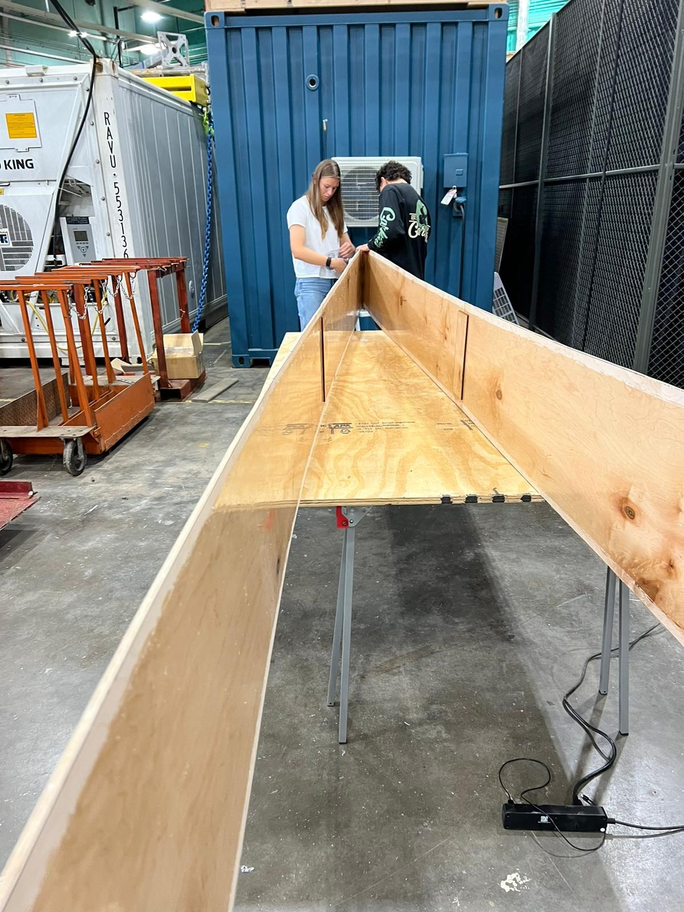
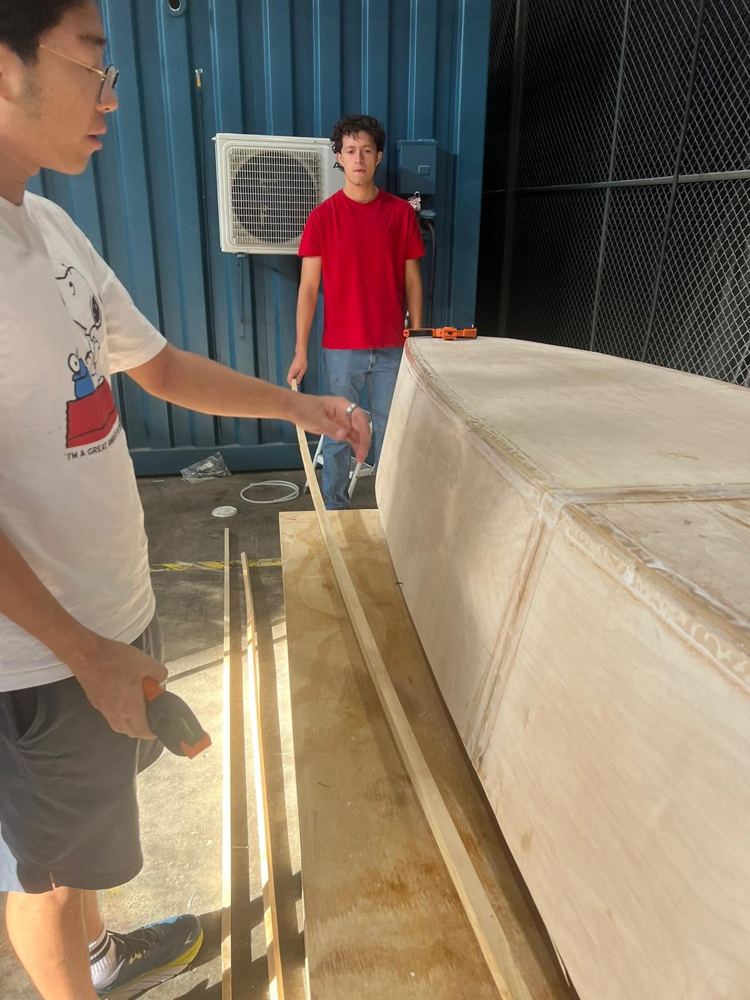
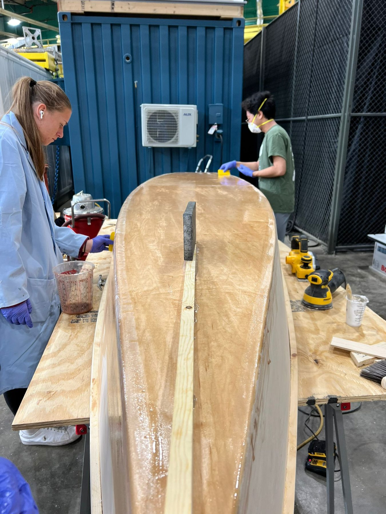

← All work / Project 05
First-year seminar · Design-build
B.O.A.T. Yacht Club
Choosing a hull design around buoyancy, then building the boat we had imagined.

01 / The idea
Start with the physics. Finish with a boat.
Our team picked a boat design by thinking through buoyancy, stability, and how the hull would carry the people in it. Then "will it float?" turned into more practical questions: can we build it, can we move it, and can we trust it on the water?
We worked through framing, sanding, sealing and finishing before taking the boat out for its final test.
02 / The build
From plywood panels to a sealed hull.



03 / What it taught me
Physical design gives honest feedback.
A boat is a good engineering teacher because the final test is immediate and visible. The design has to balance theory with how the material behaves, the fabrication choices you make, and the reality of working as a team. It was my first real taste of engineering as a shared, hands-on process.